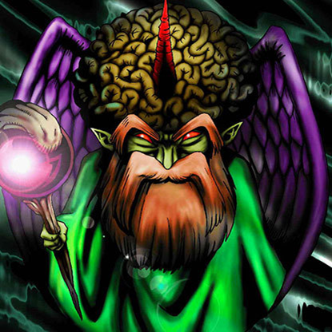

Ancient Brain

STATS
ATK: 1000
DEF: 700DECK COST
Deck Cost per Card: 17Fusion List (8 Possible Fusions)
- Ancient Brain + Baby Dragon = Blackland Fire Dragon
- Ancient Brain + Dancing Elf = Dark Elf
- Ancient Brain + Dig Beak = Garvas
- Ancient Brain + Flower Wolf = Garvas
- Ancient Brain + Fusionist = Garvas
- Ancient Brain + Gate Deeg = Garvas
- Ancient Brain + Obese Marmot of Nefariousness = Garvas
- Ancient Brain + Wicked Dragon with the Ersatz Head = Blackland Fire Dragon